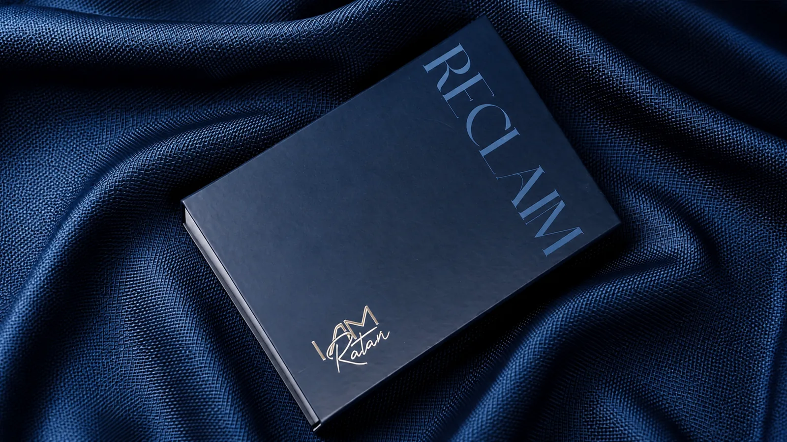

01 · On the house
Twenty years, no name on the box
There is a particular kind of anonymity that comes from making something very well.
You can spend years learning how a collar should sit. How much ease a shoulder needs. How a particular cloth behaves after washing, pressing, wearing and washing again. You can learn to recognise a good stitch without looking for it. You can know when a shirt is right because the person wearing it stops noticing the shirt altogether.
And still, when the garment leaves the room, your name doesn't leave with it.
For more than twenty years, our work lived like that.
Shirts were made in India, carried elsewhere, and eventually found themselves beneath names that were not ours. The label belonged to someone else. The relationship belonged to someone else. The story belonged to someone else.
The making was ours.
That distinction stayed with us.
Because manufacturing teaches you something that fashion often forgets: a garment is the last five percent of a much longer story.
A garment is the last five percent of a much longer story.
Before a shirt becomes a shirt, there is cloth to understand. Measurements to interpret. Patterns to correct. Machines to calibrate. Hands to train. Finishing to inspect. And, over time, instincts that cannot quite be written down.
Twenty years of that work creates a kind of knowledge.
Not the knowledge of trends.
The knowledge of what lasts.
I AM RATAN began when we decided that knowledge deserved a name.
Not because we suddenly learnt how to make shirts.
We already knew.
The change was that, for the first time, we wanted to stand behind what we knew.
That is what Reclaim means to us.
Not reclaiming a history that was lost.
Reclaiming authorship of one that was always ours.
The second generation entered the business with a different question. What happens when the people who have spent decades making for brands decide to become the brand?
The answer cannot simply be another label.
It has to be a house.
A house has a point of view. It has standards that don't change because a trend does. It has a memory. It knows what it has made before, and it knows what it refuses to make.
Most importantly, a house knows that its reputation is built slowly.
That is how we intend to build RATAN.
One shirt at a time.
One customer at a time.
One decision at a time.
For twenty years, our hands made the shirt.
Now, for the first time, our name does too.